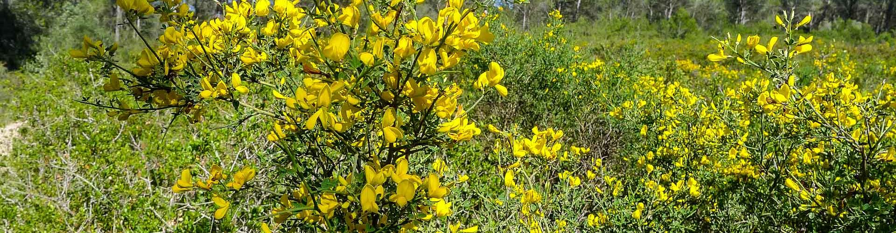

Ruta · Montgrí
Volta curta en bici que enllaça l’Estartit i Torroella tot passant pels faldars del Montpla. Es tracta d’un recorregut agradable amb un final més tècnic que ens faran gaudir sobre la bici en…